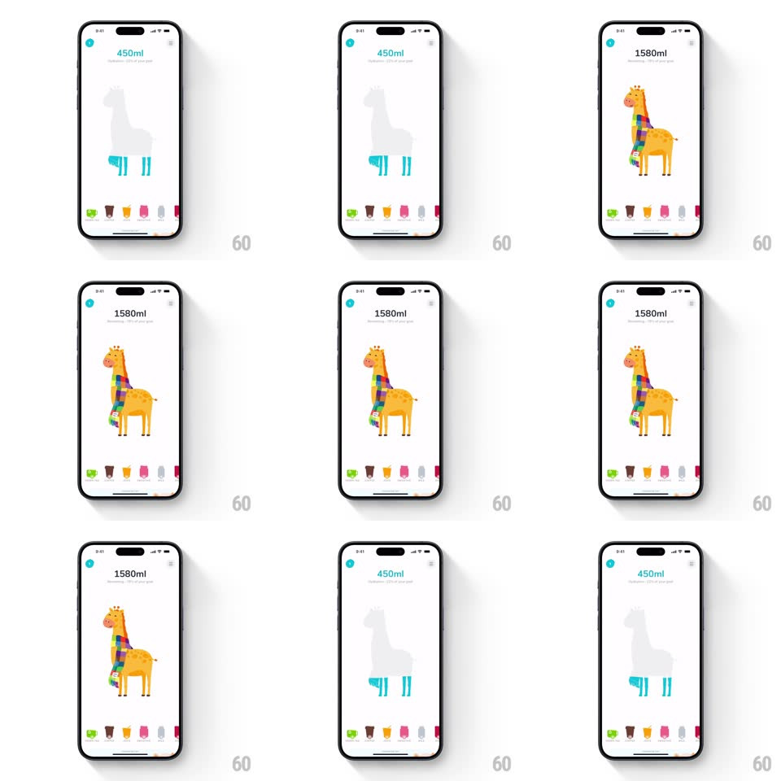

Media
Frame-by-frame

Rebuild this interaction 1:1: Waterllama's goal setup - raise the value and the gray llama silhouette's liquid legs surge upward until the mascot springs into its fully illustrated self.

Rebuild this interaction 1:1: Waterllama's goal setup - raise the value and the gray llama silhouette's liquid legs surge upward until the mascot springs into its fully illustrated self.
## Integration
Integration: stack-agnostic spec - springs given as stiffness/damping, timed motions as duration + curve; map every value to your framework and animation library of choice.
## Scene
A white setup screen: the amount ("450ml" / "1580ml") and "Your hydration goal" at top, a big llama silhouette center (gray body, teal liquid filling the legs), and a horizontally scrollable strip of vessel quick-add chips at the bottom.
## Motion spec
Pattern: fill-to-reveal mascot transformation.
- Scrubbing the goal (or tapping chips) raises/lowers the liquid inside the silhouette: the teal fill tweens to the new level (400ms, ease-out) with a wavy surface and a slosh on settle (+-4deg, spring ~300/14).
- The amount label counts to the new value (count tween, 400ms) in sync with the fill.
- Crossing the goal threshold: the silhouette erupts - the gray dissolves outward as the full-color illustrated llama (orange body, rainbow scarf) springs in (scale 0.85 to 1 with rotation -3deg to 0, spring ~340/16, a happy overshoot) with a burst of 8-10 tiny drops radiating from it.
- The mascot lands with a two-bounce settle (translateY, spring ~380/16) and does a small head tilt; the amount color shifts teal to black.
- Lowering the goal back below threshold reverses it: the illustrated llama deflates (scale + fade, 250ms) back to the gray silhouette with low liquid legs.
- Vessel chips scroll with momentum and snap (spring ~380/26); tapping one pulses it (scale 0.92, 120ms) and adds its pour to the fill.
## Calibration
- The gray silhouette and the illustrated llama share the exact same outline - the transformation must register as the same character filling with life.
- Threshold crossings are the only time the character changes; within a range, only liquid height moves.
## Reduced motion
Fill tweens without slosh; mascot crossfades.
## Don't miss
- At low values only the LEGS hold liquid - the rest of the silhouette stays empty gray; the fill respects the body mask.
- The rainbow scarf appears with the illustration, never on the gray state.